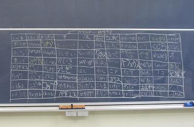
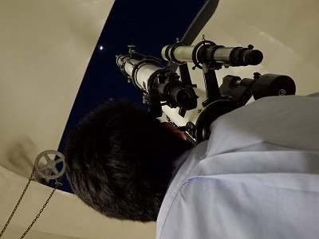

最終更新:2015.11
All rights reserved by Shibuya Makuhari High School Astronomy Club
All rights reserved by Shibuya Makuhari High School Astronomy Club
日常活動
毎週火曜日と木曜日の放課後に、ICT室2(旧UV室前)でプラネタリウム、88星座リレーなど、天文に関するものならほとんど何でもしています。
プラネタリウムは部屋の天井にあるドーム(無駄に豪華！)に投影します。
学校の備品(っぽい？)であるこの投影機を使うのですが、なにせ古いので一部の星座が正しい形で投影されないことがあります。
オリオン座が歪められて腰パンになっているのは流石に何とかならなかったのか、と言う感じですが、愚痴っても買いなおしてくれるわけがないこれもまた伝統なので、(たぶん)このまま冬の空には腰パンのおっさんが居座り続けることになるかと…。
また冬には日が短くなるので、放課後の遅い時間には天文台を開けて惑星を見たりできます。とても寒いです。
